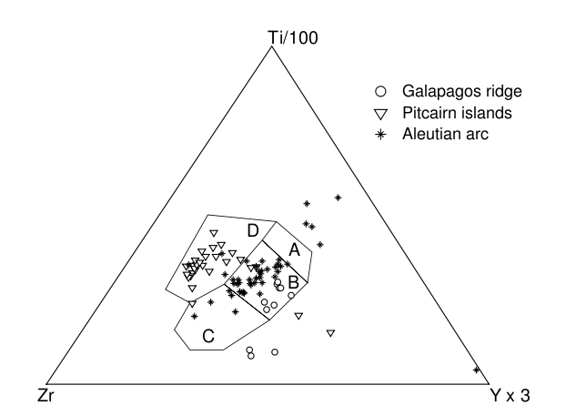

Tectonic discrimination of basalts with classification trees
Abstract Traditionally, geochemical classification of basaltic rocks of unknown tectonic affinity has been performed by discrimination diagrams. Although easy to use, this method is fairly inaccurate because it only uses bi- or trivariate data. Furthermore, many popular discrimination diagrams are statistically not very rigorous because the decision boundaries are drawn by eye, and they ignore closure, thus violating the rules of compositional data analysis. Classification trees approximate the data space by a stepwise constant function, and are a more rigorous and potentially more effective way to determine tectonic affinity. Trees allow the simultaneous use of an unlimited number of geochemical features, while still permitting visualization by an easy-to-use, two-dimensional graph. Two classification trees are presented for the discrimination of basalts of mid-ocean ridge (MORB), ocean island (OIB) and island arc (IAB) affinities. The first tree uses 51 major, minor and trace elements and isotopic ratios and should be used for the classification of fresh basalt samples. A second tree only uses high field strength (HFS) element analyses and isotopic ratios, and can also be used for basalts that have undergone alteration. The probability of successful classification is 89% for the first and 84% for the second tree, as determined by ten-fold cross-validation. Even though the trees presented in this paper use many geochemical features, it is not a problem if some of these are missing in the unknown sample. Classification trees solve this problem with surrogate variables, which give more or less the same decision as the primary variables. The advantages of the classification tree approach over discrimination diagrams are illustrated by a comparative test on a sample dataset of known tectonic affinities. Although arguably better than discrimination diagrams, classification trees are not perfect, and the limitations of the method are illustrated on a published dataset of basalts from the Pindos Basin (Greece). 1 INTRODUCTIONIgneous rocks form in a wide variety of tectonic settings, including mid-ocean ridges, ocean islands, and volcanic arcs. It is a problem of great interest to igneous petrologists to recover the original tectonic setting of mafic rocks of the past. When the geological setting alone cannot unambiguously resolve this question, the chemical composition of these rocks might contain the answer. The major, minor and trace elemental composition of basalts shows large variations, for example as a function of formation depth (e.g., Kushiro and Kuno, 1963). Traditionally, statistical classification of geochemical data has been done with discrimination diagrams (e.g., Chayes and Velde, 1965; Pearce and Cann, 1971, 1973; Pearce, 1976; Wood, 1980; Shervais, 1982). The decision boundaries of most tectonic discrimination diagrams are drawn by eye (e.g., Pearce and Cann, 1973; Wood, 1980; Shervais, 1982). Although still widely used, these diagrams have some serious problems, including:
As an alternative to discriminant analysis which resolves all these issues, this paper suggests classification trees,
which are one of the most powerful and popular “data mining” techniques (Hastie et al., 2001). One application in
which classification trees have been quite successful is email spam filtering (e.g., Hastie et al., 2001; Carreras and
Márquez, 2001). Based on a large training database of predetermined genuine and spam messages,
spam filters automatically generate a series of nested yes/no questions that decide which of the two
categories (genuine or spam) a new message belongs to. The attributes used in a tree-based spam
filter can be the frequencies of certain words or characters as a percentage of the total length of the
message, the average length of uninterrupted sequences of capital letters, the total number of capital
letters, etc. Spam filtering has many similarities with the problem of tectonic discrimination. In the
latter case, the training data will not contain two but three classes (mid-ocean ridge, ocean island
and island arc). The attributes used for the classification will be chemical concentrations and isotopic
ratios. Section 2 will give an introduction to the construction of classification trees. As for discrimination diagrams, it is
not really necessary for the end-user to know all the details of the building process, because this has to be done only
once (hence this paper) after which they are very easy to use; trees in fact easier to use than discrimination
diagrams. Therefore, only a brief introduction to the technique will be given, along with the necessary references for
the interested reader. In Section 3, two classification trees will be presented for the discrimination between basalts from mid-ocean
ridge (MORB), ocean island (OIB) and island arc (IAB) settings, based on 756 major and trace element
measurements and isotopic ratio analyses, compiled from two publicly available petrologic databases. The first tree
uses all major, minor and trace elements, and should be used for the classification of unaltered samples of basalt.
The second tree only uses immobile elements and can also be used for samples that underwent some degree of
weathering and/or metamorphism. Beyond this initial selection of suitable features, the construction of the
trees is entirely statistical, and involves no further petrological considerations or arbitrary decision
boundaries. In Section 4, both classification trees will be tested. First, a suite of modern basalts of known tectonic affinity will be classified by trees as well as discrimination diagrams. Then, a published dataset of twenty basalts from the Pindos Basin (Greece) will be classified. This will illustrate the limitations of the tree method and serve as a cautionary note, which is valid for all statistical classification methods.
2 METHODThe following paragraphs give a brief introduction to the theory of classification trees. They were compiled from Breiman et al. (1984), Ripley (1996) and Hastie et al. (2001). The interested reader is referred to these books for more details, while those who are merely interested in the applications can safely skip to Section 3.
2.1 Classification Trees: IntroductionSuppose we have N J-dimensional data points Xn={x1n,...,xjn,...,xJn}, (1≤n≤N) belonging to one of K classes: Yn=c1|...|ck|...|cK. For example, X={X1,...,Xn,...,XN} might represent J features (e.g., various major and trace element concentrations, isotopic ratios, color, weight,...) measured in N samples of basalt. c1,...,cK might then be tectonic affinity, e.g., “mid-ocean ridge”, “ocean island”, “island arc”, ... . The basic idea behind classification and regression trees (CART) is to approximate the parameter space by a piecewise constant function, in other words, to partition X into M disjoint regions {R1,...,Rm,...,RM}. An example of such a partition is given in Figure 1.a. Because it is impossible to describe all possible partitions of the feature space, we restrict ourselves to a small subset of possible solutions, the recursive binary partitions (Figure 1.b). Surprising as it may seem, considering the crudeness of this approximation, trees are one of the most powerful and popular data mining techniques in existence. One of the reasons for this is that besides assuring computational feasibility, the recursive partitioning technique described next also allows the representation of the multi-dimensional decision-space as a two dimensional tree graph (Figure 1.c). Although building a tree might seem complicated, this is not important to the user, because it only has to be done once, after which using a classification tree for data interpretation is extremely simple.
Figure 1: An example of a bivariate (X1,X2) classification tree. Classification trees approximate the
data space with a piecewise constant function (a). To ensure computational feasibility, a recursive binary
partitioning method is used (b). Such partitions have the added advantage that the results can be visualized
as a two-dimensional graph or “tree” (c). In this and subsequent trees, left branches mean “Yes” and right
branches “No”.
2.2 Building a TreeAt any point in the recursive process, a partition is defined by two quantities: the split variable j (1≤j≤J) and the split point s (-∞<s<∞). For any given partition Rm of a tree T, there are at most N×J possible binary subpartitions, which can be exhaustively searched. We choose the one that minimizes the “node impurity” Qm(T). Let mk be the proportion of class k observations in node m, then
This particular form of Qm(T) is called the “Gini index of diversity”, but alternatives exist. Note that if we simply used the “misclassification error” (i.e., the number of misclassified data points resulting from a candidate split) as a measure of node impurity, it would be impossible to partition the data set shown in Figure 1 because any initial split would misclassify all the triangles, yielding the same misclassification error (=23/63 in this case). The recursive partitioning process continues until all the end-nodes are “pure”, i.e. all belong to the same class. The maximum sized tree thus obtained perfectly describes the training data. In other words, it has zero bias. However, for the purpose of prediction, this tree is not optimal, because it overfits the training data, causing high variance. The tree with optimal predictive power will be smaller than the largest possible tree, and can be found by “cost-complexity pruning”.
2.3 Pruning a TreeDefine the “cost-complexity criterion” of a tree T as
with |T| the number of terminal nodes in T, Nm the number of observations in the mth terminal node, Qm(T) the “node impurity” defined by Equation 1 and α a tuning parameter. For a given α ≥0, it is possible to find the subtree Tα ⊂T0 that minimizes cpα(T) over all possible subtrees of the largest possible tree T0
Repeating this procedure for a range of values 0 ≤ α < ∞ produces a finite nested sequence of
trees {T0,Tα1,...,Tαmax}. Except for T0, these trees will no longer have only pure end-nodes. Impure
end-nodes are assigned the class that dominates in them. We then choose the value α* that minimizes an
estimate of future prediction error, for example by “V-fold cross-validation”. The training data are
randomly divided into V (e.g., ten) fractions of equal size. We then grow V overly large trees T0(v),
each time using all but the vth sample fraction. Each of these trees then goes through the pruning
procedure described before, yielding V nested sequences of trees {T0(v),Tα1(v),...Tαmax(v)}, 1≤v≤V.
The trees Tα(v) were constructed without ever seeing the cases in the vth fraction. Sending the vth
fraction down Tα(v) for each v=1,...,V thus yields an independent estimate of the misclassification
error. A plot of these cross-validated (CV) prediction errors versus the number of nodes in each of the nested subtrees shows a minimum at some point. As discussed before, trees with fewer nodes tend to have large bias, while the increased CV-cost of overly large trees is caused by their inflated variance. There typically exist several trees with CV-costs close to the minimum. Therefore, a “1-SE rule” is used, i.e., choosing the smallest tree whose CV misclassification cost does not exceed the minimum CV-cost plus one standard error of the CV-cost for the minimum CV-cost tree. An example of this procedure will be given in Section 3.
2.4 Handling Missing DataOne of the greatest advantages of classification trees is their ability to handle missing data. For example, in a dataset of geochemical analyses, some samples might have been analysed for major and trace elements, while others were only analysed for trace elements and stable isotopes. Yet another set of samples might have been analysed for all elements except Zr, etc. Methods like discriminant analysis cannot easily handle these situations, severely restricting their applicability and power. Both for training and prediction, trees solve the missing data problem by “surrogate splits”. Having chosen the best primary predictor and split point (disregarding the missing data), the first surrogate is the predictor and corresponding split point that has the highest correlation with the primary predictor in Rm (Figure 2). The second surrogate is the predictor that shows the second highest correlation with the primary split variable and so forth.
Figure 2: Primary split variable Xk and split point sk and surrogate split variable Xj and split point sj.
Surrogates answer the question: “which other splits would classify the same objects in the same way as the
primary split?”
3 APPLICATION TO THE TECTONIC DISCRIMINATION OF BASALTSAn extensive dataset of 756 samples was compiled from the online PETDB and GEOROC databases (www.petdb.org and georoc.mpch-mainz.gwdg.de). The dataset can be downloaded from electronic annex EA-1. It contains:
Duplicate analyses were excluded from the database to avoid potential bias towards overrepresented samples. 51 geochemical features were used:
The fact that different measurement units are mixed and that for none of the 756 samples all 51 features were
measured is not a problem for the construction of the trees, once again illustrating the robustness of the method.
The classification trees discussed next were constructed using the rpart library of the statistical software package R,
which can be downloaded free of charge from www.r-project.org. The actual R-code is provided in electronic annex
EA-2.
3.1 A Tree Using Major, Minor and Trace Elements and Isotope RatiosIn a first approach, all 51 features were used for the tree construction, including relatively mobile elements such as
CaO and Na2O. Therefore, the resulting tree should only be used on fresh samples of basalt. The
largest possible tree (T0) has 51 splits, and actually uses only 23 of the 51 selected features. These are:
SiO2, TiO2, CaO, Fe2O3, MgO, K2O, La, Pr, Nd, Sm, Gd, Tb, Yb, Lu, V, Ni, Rb, Sr, Y, Hf, Th,
87Sr/86Sr and 206Pb/204Pb. The remaining 28 features apparently did not contain enough discriminative
power. As discussed in Section 2, T0 is not the best possible tree. A plot of relative cross-validation
misclassification risk versus tree size shows a minimum at 18 splits (Figure 3). Using the 1-SE rule then puts
the optimal tree size at 8 splits (Figure 3). The resulting, optimally pruned tree is shown in Figure
4.
Figure 3: Choosing the optimal tree size. The y-axis shows the ten-fold cross-validation error, relative to the
misclassification risk of the root node (=497/756). The x-axes show the size of the tree (i.e., the number of
nodes) and the complexity parameter (cp). The first two splits account for 87% of the discriminative power.
The inset shows a magnification of the boxed part of the curve, illustrating the 1-SE rule.
Figure 4: The optimal classification tree, based on a training set of 756 geochemical analyses of at most 51
elements and isotopic ratios. The “heaviest” terminal nodes are encircled.
The classification by the optimal tree is remarkably successful. No less than 79% of all the training data correctly fall in just three terminal nodes (encircled in Figure 4). Only 7% of the training data were misclassified, while the ten-fold cross-validation error is about 11%, corresponding to a success-rate of 89%. In other words, the probability that a sample of unknown tectonic affinity will be classified correctly is 89%. The first two splits (on TiO2 and Sr) account for 87% of the discriminative power (Figure 3). In a way, this can be seen as a justification of the use of these elements in popular discrimination diagrams such as the Ti-Zr-Sr diagram (Pearce and Cann, 1973). An analysis of TiO2 and Sr alone already gives a pretty reliable classification. For example, if TiO2≥2.135%, the tree tells us there is a 91% chance that the rock has an OIB affinity. Likewise, 87% of the training data with TiO2<2.135% and Sr<156ppm are MORBs. For further discrimination, additional elements can be used, which inevitably increases the chance of missing variables. However, as discussed before, classification trees elegantly resolve this problem with surrogate split variables, which are shown in Table 1.
Table 1: Primary and surrogate splits for the nodes of Figure 4. The nodes without surrogates do not have
any alternative variables that do better than a “go with the majority” decision (given by the second column
of the table). Split number 8 has only one worthwhile surrogate.
Figure 5: The optimal classification tree using only HFS cations and isotopic ratios. The encircled terminal
nodes contain the bulk of the training data.
Table 2: Surrogate splits for the HFS tree shown in Figure 5.
3.2 A Tree of HFS Elements and Isotopic Ratios OnlyEven though the classification tree that was built in the previous section (Figure 4) performs very well for fresh basalts, this might not necessarily be the case for weathered or metamorphosed samples. For example, a lot of the power of this tree depends on Sr, which is considered a mobile element (e.g., Rollinson, 1993). Also MgO, Ni and Rb are species used in Figure 4 that are mobile to some degree. Performance of our classification, which was based on fresh samples of basalt, cannot be guaranteed if used for the tectonic discrimination of samples that have undergone alteration. Therefore, an alternative tree was built that only uses the so-called high field strength (HFS) cations, which are characterized by an ionic potential greater than two (Rollinson, 1993), as well as the isotopic ratios of Sr, Nd and Pb, because these are considered less prone to change during alteration than the concentrations themselves. The following 28 features were used: TiO2, La, Ce, Pr, Nd, Sm, Gd, Tb, Dy, Ho, Er, Tm, Yb, Lu, Sc, Y, Zr, Nb, Hf, Ta, Pb, Th, U, 143Nd/144Nd, 87Sr/86Sr, 206Pb/204Pb, 207Pb/204Pb and 208Pb/204Pb. The resulting pruned tree is shown in Figure 5, while its surrogate splits are given in Table 2. The first two splits, both on TiO2, contribute 85% of the discriminative power of the tree. The cross-validated misclassification error of the optimal tree is 16%, i.e., there is 84% chance of a correct classification.
4 TESTING THE TREESFirst, we will use the trees given by Figures 4 and 5 to classify some fresh, modern basalts of known tectonic affinity, but from field areas that were not included in the training dataset. Then, the classification tree method will be applied to a published dataset of unknown tectonic affinity.
4.1 Classifying Rocks of Known Tectonic AffinityBoth trees were tested on three suites of samples that had not been used in the tree construction. The test data (electronic annex EA-1) include:
First, these geochemical analyses were classified using the classic Ti-Zr-Y diagram of Pearce and Cann (1973).
The results are shown on Figure 6 and Table 3. A large subset of the data could not be classified, because (1) either
Ti, Zr or Y had not been analysed, or (2) because the data do not plot inside any of the labeled areas of the ternary
diagram. A substantial portion of the remaining data plots in field “B” of the discrimination diagram, which is of
mixed tectonic affinity, although further classification can be done using the Ti-Zr diagram (Pearce and Cann,
1973). For the samples that plot in fields “A”, “C” and “D”, the classification seems to be quite successful,
although it is hard to assess the misclassification risk because the number of “classifiable” points is so
small.

Figure 6: The test data plotted on the Ti-Zr-Y discrimination diagram of Pearce and Cann (1973). More
than half of the test data could not be plotted on this diagram because at least one of the three elements
was missing. A – island arc tholeiites, C – calc-alkali basalts, D – within plate basalts, B – MORB, island-arc
tholeiites and calc-alkali basalts. A and C are the IAB fields, D the OIB field and B a mixed field of MORBs
and IABs.
Table 3: Summary table of the discriminant analysis of Figure 6. The Ti-Zr-Y plot does not discriminate
MORBs from IABs (both plot in field “B’).
It might not seem fair to the discrimination diagram method to only compare our classification trees with the
method of Pearce and Cann (1973). Although this diagram has great historical significance and is still used a lot, it
suffers from many of the wrong statistical assumptions that have plagued the analysis of compositional data, and
have been discussed elsewhere (e.g., Aitchison, 1986). The Ti-V diagram of Shervais (1982) largely avoids these
problems, because it only uses two variables, and does not rescale them to a constant sum, as is the case for the
ternary Ti-Zr-Y diagram of Pearce and Cann (1973). Furthermore, the training data of Shervais (1982) do not
consist of averages of multiple samples, but of individual geochemical analyses. The Ti-V diagram can distinguish
between all three tectonic affinities, so there is no field of “mixed affinity” like field B of Figure 6.
Figure 7 shows the test data plotted on the Ti-V diagram. Table 4 summarizes the performance of this
classification.
Table 4: Summary table of the Ti-V discrimination diagram of Figure 7.
The decision boundaries of all the tectonic discrimination diagrams discussed so far were drawn by eye.
Vermeesch (2006) revisited these and other diagrams and recalculated the decision boundaries using
the statistically more rigorous technique of discriminant analysis. Besides revisiting the diagrams of
Pearce and Cann (1973), Shervais (1982) and others, Vermeesch (2006) also performed an exhaustive
exploration of all possible binary and ternary combinations of 45 elements, based on the same training
data used in the present paper. Here, only two of these diagrams will be discussed. The best overall
linear discrimination diagram uses the combination of Si, Ti and Sr (Figure 8, Table 5). The best
quadratic discrimination diagram of only relatively immobile elements uses Ti, V and Sm (Figure 9, Table
6).
Figure 8: The test data (164/182 used) plotted on the Si-Ti-Sr linear discrimination diagram (redrawn from
Vermeesch, 2006).
Figure 9: The test data (85/182 used) plotted on the Ti-V-Sm quadratic discrimination diagram (redrawn
from Vermeesch, 2006)
Table 5: Test of the best linear discrimination diagram of Vermeesch (2006) (Figures 8), using Si, Ti and
V.
Table 6: Test of the best quadratic discriminant analysis of Vermeesch (2006) (Figure 9), using Ti, V and
Sm.
The same data were also classified with the trees of Figures 4 and 5. The results of this experiment are shown in
Tables 7 and 8. Contrary to the discrimination diagrams, the classification trees managed to assign a tectonic
affinity to all 182 test samples. The HFS tree misclassifies quite a few more IABs and MORBs than the full tree. For
the MORBs, it is probably not surprising that 14 out of 54 Galapagos ridge samples were misclassified as OIBs,
considering the possible presence of plume-ridge interactions near the Galapagos hot spot. The higher
misclassification risk of the HFS tree reminds us of the fact that unless rocks are obviously altered, it is better to use
the full tree, which includes Sr.
Table 7: Test of the full tree (Figure 4) on a suite of rocks that were not used in its construction.
Performance of the Ti-V diagram is remarkably good and comparable to that to the full tree with a misclassification rate of 13/93 for the former and 23/182 for the latter (Tables 4 and 7). The Si-Ti-Sr (17/164 misclassified, Table 5) and Ti-V-Sm (8/85 misclassified, Table 6) diagrams even seem to perform better than the classification trees. However, this is likely to change for new trees created from larger sets of training data. Discriminant analysis does not gain much from excessively large databases, whereas classification trees keep improving. And again, neither the Si-Ti-Sr nor the Ti-V-Sm diagram succeeded in classifying all the test data, in contrast with the classification trees. 4.2 Predictions for Rocks of Unknown Tectonic AffinityWe will now apply the classification tree method to a published dataset of 20 basalts from the Pindos Basin in
Greece (Saccani et al., 2003). This exercise will serve as an illustration of the way the tree method works in practice,
and of its limitations. The features relevant to the classification tree analysis are shown in Table 9. As a first
example, consider sample GR 47b. It travels through the full classification tree of Figure 4 as follows:
TiO2<2.135% → Sr≥156ppm → TiO2≥1.285% → MgO<9.595% → MgO≥5.775% → Rb ≥ 3.675ppm.
The same sample travels through the HFS tree of Figure 5 along the following path: TiO2<2.135%
→ TiO2≥1.046% → Nd<12.785ppm. Note that for the last step, the second surrogate variable was
used (Table 1), because no isotopic ratios were measured for these samples. No rare earth elements
were measured for sample GR 56c. Therefore, its path through the HFS tree stops at node 4, where a
“follow the majority” decision must be made. Since the distribution of training data in this node is
IAB/MORB/OIB = 73/194/43 (Table 2), GR 56c is classified as a MORB, albeit not with the greatest
confidence.
Table 9: Summary of geochemical analyses of Triassic basalts of the Pindos Basin, from Saccanti et al.
(2003). Most of the analyses point towards a MORB affinity for these rocks. There is agreement between
the full classification tree and the one that only uses HFS elements for half of the samples (all agreeing on a
MORB affinity). The cases where there is disagreement between the two classifications could be due to the
selective loss of Mg and Sr. Sample GR 181b was classified as an IAB with a probability of only ~2/3.
There is agreement between the full tree and the HFS tree for only half of the samples. Samples GR 50d, 51a and 51b were classified as IAB by the full tree, and as MORB by the HFS tree. The distinction between IAB and MORB is the hardest one to make. IABs have a much greater compositional diversity than both MORBs and OIBs. This is also reflected in most discrimination diagrams (see for example Figure 6). Furthermore, it might be possible that Mg was lost during the greenschist metamorphism that affected the Pindos ophiolites (Saccani et al., 2003). This would have caused sample GR 50d to be sent left, rather than right at node 7 of Figure 4. Likewise, it is possible that Sr-loss caused samples GR 71a-e and 195a to be sent left, rather than right at node 3 of the full tree. Finally, sample GR 181b was classified as an IAB by the HFS tree (Figure 5). However, its terminal node (left branch of node 5) is not very pure: IAB/MORB/OIB = 43/20/0, once again illustrating the difficulty of distinction between MORB and IAB affinities, which is caused by the complicated petrogenesis of the latter. 5 CONCLUSIONSIt was not the purpose of this paper to claim that discriminant analysis or discrimination diagrams are either bad or obsolete. It merely suggests a completely different statistical approach to tectonic classification by rock geochemistry. Classification trees are presented as a simple yet powerful way to classify basaltic rocks of unknown tectonic affinity. Some of the strengths of the method are:
On the other hand, trees are not perfect, and also have a few problems:
Most importantly, as was illustrated by the examples of Section 3, no classification method based solely on geochemical data will ever be able to perfectly determine the tectonic affinity of basaltic rocks (or other rocks for that matter) simply because there is a lot of actual overlap between the geochemistry of the different tectonic settings. Notably IABs have a much wider range of compositions than either MORBs or OIBs. Therefore, geochemical classification should never be the only basis for determining tectonic affinity. This is especially the case for rocks that have undergone alteration. In such cases, mobile elements such as Sr, which have great discriminative power, cannot be used. If in addition to this, some other features have not been measured (such as isotope ratios and rare earths in some of the samples of Table 9), then one might not be able to put much faith in the classification.
ACKNOWLEDGMENTSThe author wishes to thank Richard Arculus, John Rudge and Steve Galer for extremely constructive and insightful reviews. REFERENCES
| ||||||||||||||||||||||||||||||||||||||||||||||||||||||||||||||||||||||||||||||||||||||||||||||||||||||||||||||||||||||||||||||||||||||||||||||||||||||||||||||||||||||||||||||||||||||||||||||||||||||||||||||||||||||||||||||||||||||||||||||||||||||||||||||||||||||||||||||||||||||||||||||||||||||||||||||||||||||||||||||||||||||||||||||||||||||||||||||||||||||||||||||||||||||||||||||||||||||||||||||||||||||||||||||||||||||||||||||||||||||||||||||||||||||||||||||||||||||||||||||||||||||||||||||||||||||||||||||||||||||||||||||||||||||||||||||||||||||||||